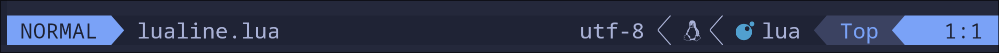
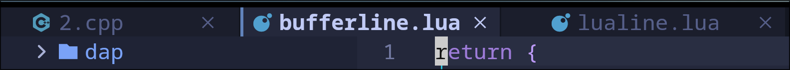
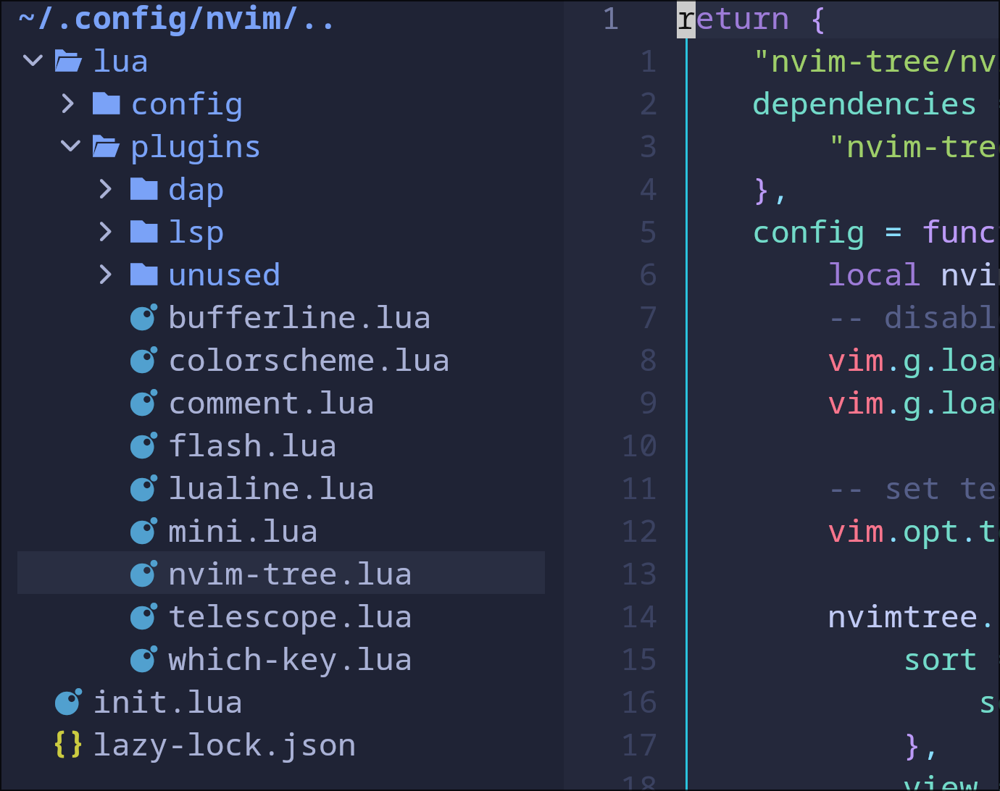
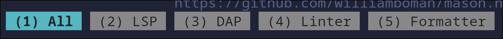
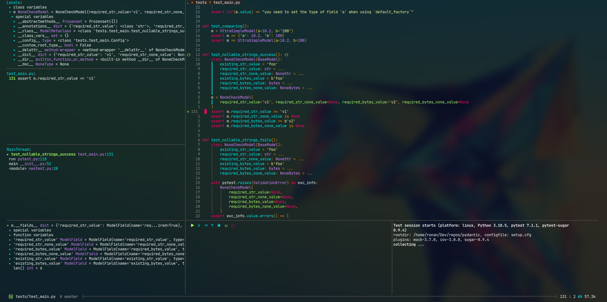
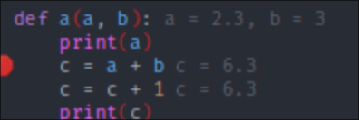
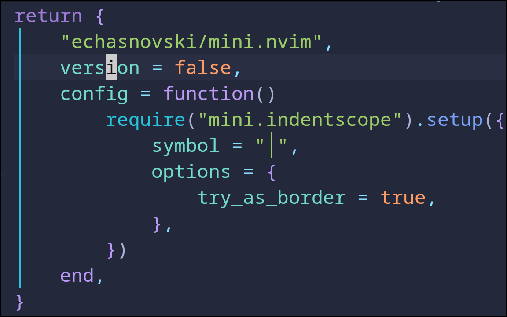

Neovim
neovim的配置, 使用lazy.vim的包管理器,使用以模块为单位的文件配置
我的配置文件: https://github.com/MorrowSol/nvim
写代码需要的功能
- 代码格式化
- 代码高亮
- 代码补全
- 调试功能
- 注释
- coderunner快捷运行代码
- lsp设置includepath
- 自定义snippets脚本
- 终端显示
- git ui
安装
复制nvim配置文件
外部安装 ripgrep,fd,lazygit
neovim的配置文件
neovim使用lua作为配置文件,以init.lua文件作为配置文件入口
lua的包导入:require(“aa.xx”)
aa分别是目录路径可以递归 aa.bb.cc.dd.ee
xx是lua文件的文件名,不需要xx.lua
neovim可以默认从lua文件导入包,也就是可以创建lua的文件夹,lua下的文件可以直接导入
如: lua/config/keymaps.lua
可以在init.lua中直接使用 require(“config.keymaps”)导入
多种写法,lua都支持
- require(“xxx”) = require(‘xxx’) = require"xxx" = require’xxx’
- config.keymaps = config/keymaps
这是我的配置文件tree
nvim ├── init.lua └── lua ├── config │ ├── core │ │ ├── keymaps.lua │ │ └── options.lua │ └── lazy.lua └── plugins ├── xxx.lua
非常简单,config.core文件夹作为neovim的基本配置文件,lazy.lua文件用于lazy.nvim的加载
plugins文件夹下放置插件
核心文件
当然core文件是随意建的,可以不要,也可以改名,只要导入时路径对即可
keymaps:这里面是改键的映射,我在这里只改了vim的通用按键,插件的按键放到了插件文件里,这个以个人喜好全放到keymaps文件也可以,我是以插件的配置全放到该插件里利于管理
vim.g.mapleader = " "
local keymap = vim.keymap
keymap.set("i","jk","<ESC>")
-- window navigation
keymap.set("n","<C-h>","<C-w>h")
keymap.set("n","<C-j>","<C-w>j")
keymap.set("n","<C-k>","<C-w>k")
keymap.set("n","<C-l>","<C-w>l")
keymap.set("n","<C-q>","<C-w>q")
keymap.set("n","<C-\\>","<C-w>v")
keymap.set("n","<C-->","<C-w>s")
-- resize window
keymap.set("n","<C-Up>",":resize -2<CR>")
keymap.set("n","<C-Down>",":resize +2<CR>")
keymap.set("n","<C-Left>",":vertical resize -2<CR>")
keymap.set("n","<C-Right>",":vertical resize +2<CR>")
-- 缩进
keymap.set("v","<S-TAB>","<gv")
keymap.set("v","<TAB>",">gv")
-- 多行移动
keymap.set("v","J",":m '>+1<CR>gv=gv")
keymap.set("v","K",":m '<-2<CR>gv=gv")只改了一些通用的配置,如jk换esc, window的移动,resize,缩进按照其他ide的习惯,使用tab
第一行是设置主键,可以通过< leader>+其他键作为快捷键
options: 这里面是对vim的配置进行设置
local opt = vim.opt
-- 行号
opt.relativenumber = true
opt.number = true
-- 缩进
opt.tabstop = 4
opt.shiftwidth = 4
opt.expandtab = true
opt.autoindent = true
opt.wrap = false
opt.cursorline = true
opt.clipboard:append("unnamedplus")
opt.termguicolors = true
opt.signcolumn = "yes"都是些常用的设置
然后在init.lua里导入
require("config.core.keymaps")
require("config.core.options")lazy.vim的安装
https://github.com/folke/lazy.nvim
按照官方教程:
local lazypath = vim.fn.stdpath("data") .. "/lazy/lazy.nvim"
if not vim.loop.fs_stat(lazypath) then
vim.fn.system({
"git",
"clone",
"--filter=blob:none",
"https://github.com/folke/lazy.nvim.git",
"--branch=stable", -- latest stable release
lazypath,
})
end
vim.opt.rtp:prepend(lazypath)
require("lazy").setup(plugins, opts)将这些直接添加到init.lua文件即可
但是我们使用模块的配置,创建lua.config.lazy.lua文件,将这些复制到该文件,并在init.lua文件中导入
require("lazy").setup(plugins, opts)再打开nvim时lazy就会加载,不过一开始是在后台加载,可以通过 :Lazy 调出lazy界面
插件加载
require("lazy").setup(
{
"folke/which-key.nvim",
{ "folke/neoconf.nvim", cmd = "Neoconf" },
"folke/neodev.nvim",
},
{
"folke/which-key.nvim",
{ "folke/neoconf.nvim", cmd = "Neoconf" },
"folke/neodev.nvim",
},
)直接将plugins替换为实际的插件,具体怎么写在插件实际用到再说
但是这样的话插件越来越多,都写在lazy.lua文件下不利于管理
按照官方的推荐,我们替换lazy启动命令为
require("lazy").setup({{import = "plugins"}})与上面的相比,这个在启动时会自动加载lua/plugins文件夹下的所有插件,所以我们创建plugins文件夹,并添加插件
替换原来的加载方式直接写在setup中,我们可以将下面的写法,通过{{import = “plugins”}}导入插件配置文件
以上面的插件为例,可以通过在lua/plugins文件夹下创建which-key.lua文件,文件名随意,里面内容为
return {
"folke/which-key.nvim",
{ "folke/neoconf.nvim", cmd = "Neoconf" },
"folke/neodev.nvim",
}也就是多了个return
这样就可以每个插件或多个相同功能的插件放到一个单独文件下进行模块化配置
多个插件为以下写法,再套一层括号
return {
{
"folke/which-key.nvim",
{ "folke/neoconf.nvim", cmd = "Neoconf" },
"folke/neodev.nvim",
},
{
"folke/which-key.nvim",
{ "folke/neoconf.nvim", cmd = "Neoconf" },
"folke/neodev.nvim",
}
}插件
这是我当前用的基本插件
- lualine: 下面的状态栏,好看一点
- bufferline: 上面的已打开的buffer
- nvim-tree: 文件管理器
- 主题
- telescope: 文件搜索
- whick-key: 提示快捷键
- mini: 大括号范围提示
- flash: 光标跳转
- comment: 注释
- lsp系列
- dap系列
我的原则是能不自己写就不自己写,直接抄官方的配置,尽量减少改动
一般的插件可能没有lazy的配置, 所以需要一些改动
lualine
https://github.com/nvim-lualine/lualine.nvim

packer.nvim
use {
'nvim-lualine/lualine.nvim',
requires = { 'nvim-tree/nvim-web-devicons', opt = true }
}改为
use换return
requires是依赖项, 换dependencies
opt = true是默认配置,可以不写
第一行是github的库名
然后还需要启动,写在config = function里
return {
'nvim-lualine/lualine.nvim',
dependencies = { 'nvim-tree/nvim-web-devicons'}
opt = {}
config = function(_,opt)
require('lualine').setup(opt)
end,
}由于opt没写,启动只是默认配置和 require(’lualine’).setup() 一样
可以简写为, 使用默认配置
return {
'nvim-lualine/lualine.nvim',
dependencies = { 'nvim-tree/nvim-web-devicons'}
config = true
}如果需要改配置,可写在opt里,或是直接写在setup({})里,需要执行的命令可写在function里
bufferline
https://github.com/akinsho/bufferline.nvim

提供了lazy配置
return {
'akinsho/bufferline.nvim',
version = "*",
dependencies = 'nvim-tree/nvim-web-devicons'
config = function()
vim.opt.termguicolors = true
require("bufferline").setup({
options = {
offsets = {
{
filetype = "NvimTree",
text = "File Explorer",
highlight = "Directory",
separator = true, -- use a "true" to enable the default, or set your own character
},
},
},
})
end,
}注意这里启动是多了 vim.opt.termguicolors = true 配置 开启终端真颜色, 可以写在这里,或者options.lua文件里
按照官方提示See the docs for details :h bufferline.nvim
查找command项, 有关闭buffer的命令, 没找到切换buffer的命令
BufferLineCloseRight- close all visible buffers to the right of the current bufferBufferLineCloseLeft- close all visible buffers to the left of the current bufferBufferLineCloseOthers- close all other visible buffers
在sorting项中找到了,因为原生vim中有切换的操作,不过建议用bufferline的
When using a sorted bufferline it’s advisable that you use theBufferLineCycleNext and BufferLineCyclePrev commands since these will traverse the bufferline bufferlist in order whereas bnext and bprev will cycle buffers according to the buffer numbers given by vim.
nnoremap <silent>[b :BufferLineCycleNext<CR>
nnoremap <silent>b] :BufferLineCyclePrev<CR>改键切换buffer,这里至改前后切换,其他命令改键类似
上面那个可能是原生vim的写法, 我们使用neovim的lua方式
vim.keymap.set("n", "<S-h>", ":BufferLineCyclePrev<CR>")
vim.keymap.set("n", "<S-l>", ":BufferLineCycleNext<CR>")在normal (n)模式下,按 shift+h 切换到上一个buffer
改键配置写的config中或keymaps文件, 我直接写在这了, 最终配置文件为
return {
"akinsho/bufferline.nvim",
version = "*",
dependencies = "nvim-tree/nvim-web-devicons",
config = function()
vim.opt.termguicolors = true
require("bufferline").setup()
vim.keymap.set("n", "<S-h>", ":BufferLineCyclePrev<CR>")
vim.keymap.set("n", "<S-l>", ":BufferLineCycleNext<CR>")
end,
}nvim-tree
https://github.com/nvim-tree/nvim-tree.lua

直接官网的install
nvim-tree/nvim-tree.lua
`nvim-tree/nvim-web-devicons` optional, for file icons写为
return {
"nvim-tree/nvim-tree.lua",
dependencies = {
"nvim-tree/nvim-web-devicons",
},
}setup照抄到config function,命令看command, 再加一个改键
return {
"nvim-tree/nvim-tree.lua",
dependencies = {
"nvim-tree/nvim-web-devicons",
},
config = function()
-- disable netrw at the very start of your init.lua
vim.g.loaded_netrw = 1
vim.g.loaded_netrwPlugin = 1
-- set termguicolors to enable highlight groups
vim.opt.termguicolors = true
require("nvim-tree").setup({
sort = {
sorter = "case_sensitive",
},
view = {
width = 30,
},
renderer = {
group_empty = true,
},
filters = {
dotfiles = true,
},
})
vim.keymap.set("n", "<leader>e", ":NvimTreeToggle<cr>")
end,
}主题
我这里用的是tokyonight
https://github.com/folke/tokyonight.nvim
配置照抄,加上启用命令
return {
"folke/tokyonight.nvim",
lazy = false,
priority = 1000,
opts = {},
config = function()
vim.cmd([[colorscheme tokyonight]])
end,
}telescope
文件搜索
https://github.com/nvim-telescope/telescope.nvim
要功能更强大需要更多依赖
按照官方的建议,可选依赖
-
sharkdp/fd (finder)
-
nvim-treesitter/nvim-treesitter (finder/preview)
-
neovim LSP (picker)
-
devicons (icons)
其中ripgrep和fd通过外部安装,我的是arch pacman即可,其他系统见github页面
preview因为我的终端太小打不开,使用preview_cutoff = 0, 强制开启, 不过也没啥用, 太小了
return {
"nvim-telescope/telescope.nvim",
tag = "0.1.5",
dependencies = {
"nvim-lua/plenary.nvim",
"nvim-treesitter/nvim-treesitter",
"nvim-tree/nvim-web-devicons",
},
config = function()
require("telescope").setup({
defaults = {
layout_config = {
horizontal = {
preview_cutoff = 0,
},
},
},
})
local builtin = require("telescope.builtin")
vim.keymap.set("n", "<C-p>", builtin.find_files, {})
vim.keymap.set("n", "<C-f>", builtin.live_grep, {})
end,
}which-key
https://github.com/folke/which-key.nvim
按下一个键后,提示下一个设置的快捷键, 习惯了就没用了
return {
"folke/which-key.nvim",
event = "VeryLazy",
init = function()
vim.o.timeout = true
vim.o.timeoutlen = 300
end,
opt = {}
-- or
-- config = true
}flash
https://github.com/folke/flash.nvim
光标跳转,非常nb
{
"folke/flash.nvim",
event = "VeryLazy",
---@type Flash.Config
opts = {},
-- stylua: ignore
keys = {
{ "s", mode = { "n", "x", "o" }, function() require("flash").jump() end, desc = "Flash" },
{ "S", mode = { "n", "x", "o" }, function() require("flash").treesitter() end, desc = "Flash Treesitter" },
{ "r", mode = "o", function() require("flash").remote() end, desc = "Remote Flash" },
{ "R", mode = { "o", "x" }, function() require("flash").treesitter_search() end, desc = "Treesitter Search" },
{ "<c-s>", mode = { "c" }, function() require("flash").toggle() end, desc = "Toggle Flash Search" },
},
}persistence
窗口持久化插件,就是关闭vim后,下次打开可以恢复上次的浏览状况,好像用处不大
return {
"folke/persistence.nvim",
event = "BufReadPre", -- this will only start session saving when an actual file was opened
lazy = true,
opts = {
dir = vim.fn.expand(vim.fn.stdpath("state") .. "/sessions/"), -- directory where session files are saved
options = { "buffers", "curdir", "tabpages", "winsize" }, -- sessionoptions used for saving
pre_save = nil, -- a function to call before saving the session
save_empty = false, -- don't save if there are no open file buffers
},
config = function(_, opts)
require("persistence").setup(opts)
-- restore the session for the current directory
vim.api.nvim_set_keymap("n", "<leader>qs", [[<cmd>lua require("persistence").load()<cr>]], {})
-- restore the last session
vim.api.nvim_set_keymap("n", "<leader>ql", [[<cmd>lua require("persistence").load({ last = true })<cr>]], {})
-- stop Persistence => session won't be saved on exit
vim.api.nvim_set_keymap("n", "<leader>qd", [[<cmd>lua require("persistence").stop()<cr>]], {})
end,
}toggleterm
可以在vim内打开终端,可配合lazygit程序使用
return {
"akinsho/toggleterm.nvim",
version = "*",
config = function()
require("toggleterm").setup({
open_mapping = "<C-/>",
direction = "float",
shade_terminals = true,
})
local Terminal = require("toggleterm.terminal").Terminal
local lazygit = Terminal:new({ cmd = "lazygit", hidden = true })
function _lazygit_toggle()
lazygit:toggle()
end
vim.api.nvim_set_keymap("n", "<leader>g", "<cmd>lua _lazygit_toggle()<CR>", { noremap = true, silent = true })
end,
}indent-blankline
每个缩进都有线标识
return {
"lukas-reineke/indent-blankline.nvim",
main = "ibl",
opts = {},
}lsp
lsp是语言的后端服务器,可以理解为帮助前端程序提供代码解析,高亮等功能
其中主要目的就是代码高亮和错误提示
nvim作为前端没有该功能,需要lsp提供服务
这里以c++为例,c++的lsp是clang,nvim通过nvim-lspconfig管理lsp配置
为了方便安装lsp,使用mason作为包管理工具
nvim-treesitter提供一个简单和容易的方式来使用tree-sitter在Neovim并提供一些基本的功能
mason
官方直接抄,输入:Mason打开界面
mason提供各类安装

lsp:语言服务器代理,提供语法语义功能
dap:调试适配协议,提供debug功能
linter:静态代码分析工具，可以检查代码质量和风格问题
formatter:格式化工具
return {
"williamboman/mason.nvim",
config = function()
require("mason").setup({
ui = {
icons = {
package_installed = "✓",
package_pending = "➜",
package_uninstalled = "✗",
},
},
})
end,
}nvim-lspconfig
https://github.com/neovim/nvim-lspconfig
return {
"neovim/nvim-lspconfig",
dependencies = {
-- {
-- "folke/neoconf.nvim",
-- cmd = "Neoconf",
-- config = false,
-- dependencies = {
-- "nvim-lspconfig",
-- },
-- },
{
"folke/neodev.nvim",
opts = {},
},
"mason.nvim",
"williamboman/mason-lspconfig.nvim",
},
config = function()
local lspconfig = require("lspconfig")
lspconfig["lua_ls"].setup({})
lspconfig["clangd"].setup({})
-- Global mappings.
-- See `:help vim.diagnostic.*` for documentation on any of the below functions
vim.keymap.set("n", "<space>d", vim.diagnostic.open_float)
vim.keymap.set("n", "[d", vim.diagnostic.goto_prev)
vim.keymap.set("n", "]d", vim.diagnostic.goto_next)
vim.keymap.set("n", "<space>q", vim.diagnostic.setloclist)
-- Use LspAttach autocommand to only map the following keys
-- after the language server attaches to the current buffer
vim.api.nvim_create_autocmd("LspAttach", {
group = vim.api.nvim_create_augroup("UserLspConfig", {}),
callback = function(ev)
-- Enable completion triggered by <c-x><c-o>
vim.bo[ev.buf].omnifunc = "v:lua.vim.lsp.omnifunc"
-- Buffer local mappings.
-- See `:help vim.lsp.*` for documentation on any of the below functions
local opts = { buffer = ev.buf }
vim.keymap.set("n", "gD", vim.lsp.buf.declaration, opts)
vim.keymap.set("n", "gd", vim.lsp.buf.definition, opts)
vim.keymap.set("n", "K", vim.lsp.buf.hover, opts)
vim.keymap.set("n", "gi", vim.lsp.buf.implementation, opts)
-- vim.keymap.set("n", "<C-k>", vim.lsp.buf.signature_help, opts)
-- vim.keymap.set("n", "<space>wa", vim.lsp.buf.add_workspace_folder, opts)
-- vim.keymap.set("n", "<space>wr", vim.lsp.buf.remove_workspace_folder, opts)
-- vim.keymap.set("n", "<space>wl", function()
-- print(vim.inspect(vim.lsp.buf.list_workspace_folders()))
-- end, opts)
-- vim.keymap.set("n", "<space>D", vim.lsp.buf.type_definition, opts)
-- vim.keymap.set("n", "<space>rn", vim.lsp.buf.rename, opts)
-- vim.keymap.set({ "n", "v" }, "<space>ca", vim.lsp.buf.code_action, opts)
-- vim.keymap.set("n", "gr", vim.lsp.buf.references, opts)
-- vim.keymap.set("n", "<space>f", function()
-- vim.lsp.buf.format({ async = true })
-- end, opts)
end,
})
end,
}这里主要是直接抄官方的,加了几个依赖
mason-lspconfig用来整合lsp和mason
neodev用来对vim lua的api提示, 主要是没这个vim报警告
config里是官方的,要注意开头setup的是你自己的lsp,有些map我用不着就注释了
比如 lspconfig[“clangd”].setup({})
nvim-treesitter
https://github.com/nvim-treesitter/nvim-treesitter
代码高亮
return {
"nvim-treesitter/nvim-treesitter",
build = ":TSUpdate",
config = function()
require("nvim-treesitter.configs").setup({
ensure_installed = { "c", "c++", "lua", "vim", "vimdoc", "query" },
sync_install = false,
auto_install = true,
highlight = {
enable = true,
additional_vim_regex_highlighting = false,
},
})
end,
}rainbow-delimiters
括号颜色区分
{
"hiphish/rainbow-delimiters.nvim",
config = function()
-- This module contains a number of default definitions
local rainbow_delimiters = require("rainbow-delimiters")
vim.g.rainbow_delimiters = {
strategy = {
[""] = rainbow_delimiters.strategy["global"],
vim = rainbow_delimiters.strategy["local"],
},
query = {
[""] = "rainbow-delimiters",
lua = "rainbow-blocks",
},
priority = {
[""] = 110,
lua = 210,
},
highlight = {
"RainbowDelimiterRed",
"RainbowDelimiterYellow",
"RainbowDelimiterBlue",
"RainbowDelimiterOrange",
"RainbowDelimiterGreen",
"RainbowDelimiterViolet",
"RainbowDelimiterCyan",
},
}
end,
},nvim-cmp
代码补全
需要改以下官方的
Plug ’neovim/nvim-lspconfig' Plug ‘hrsh7th/cmp-nvim-lsp’
这些除了自己全写成依赖
lua那里全写到function
然后有4个snip插件,选一个把下面启动的注释删了
我这里选第二个,因为后面用到了
offsets = {
{
filetype = "NvimTree",
text = "File Explorer" | function ,
text_align = "left" | "center" | "right"
separator = true
}
},
offsets = {
{
filetype = "NvimTree",
text = "File Explorer",
highlight = "Directory",
separator = true -- use a "true" to enable the default, or set your own character
}
}cmp也只是个补全的前端,他需要依赖其他源才能补全
正如依赖中所示有nvim-lsp buffer path cmdline
我们还可以添加其他源
官方的源列表: https://github.com/hrsh7th/nvim-cmp/wiki/List-of-sources
添加lspkind可提供icon和来源提示
https://github.com/onsails/lspkind.nvim
local cmp = require('cmp')
local lspkind = require('lspkind')
cmp.setup {
formatting = {
format = lspkind.cmp_format(),
},
}最终配置
return {
"hrsh7th/nvim-cmp",
-- event = "InsertEnter",
dependencies = {
"neovim/nvim-lspconfig",
"hrsh7th/cmp-nvim-lsp",
"hrsh7th/cmp-buffer",
"hrsh7th/cmp-path",
"hrsh7th/cmp-cmdline",
"L3MON4D3/LuaSnip",
"saadparwaiz1/cmp_luasnip",
"rafamadriz/friendly-snippets",
"onsails/lspkind-nvim",
},
config = function()
local cmp = require("cmp")
local lspkind = require("lspkind")
cmp.setup({
snippet = {
expand = function(args)
require("luasnip").lsp_expand(args.body) -- For `luasnip` users.
end,
},
window = {},
mapping = cmp.mapping.preset.insert({
["<C-b>"] = cmp.mapping.scroll_docs(-4),
["<C-f>"] = cmp.mapping.scroll_docs(4),
["<C-Space>"] = cmp.mapping.complete(),
["<C-e>"] = cmp.mapping.abort(),
["<CR>"] = cmp.mapping.confirm({ select = true }),
}),
sources = cmp.config.sources({
{ name = "nvim_lsp" },
{ name = "luasnip" }, -- For luasnip users.
}, {
{ name = "buffer" },
{ name = "path" },
}),
formatting = {
format = lspkind.cmp_format({
maxwidth = 50,
ellipsis_char = "...",
}),
},
})
cmp.setup.filetype("gitcommit", {
sources = cmp.config.sources({
{ name = "git" },
}, {
{ name = "buffer" },
}),
})
cmp.setup.cmdline({ "/", "?" }, {
mapping = cmp.mapping.preset.cmdline(),
sources = {
{ name = "buffer" },
},
})
cmp.setup.cmdline(":", {
mapping = cmp.mapping.preset.cmdline(),
sources = cmp.config.sources({
{ name = "path" },
}, {
{ name = "cmdline" },
}),
})
-- 加载friendly-snippets
require("luasnip.loaders.from_vscode").lazy_load()
-- 加载自己写的snippets 在~/.config/nvim/snippets/cpp.code-snippets文件
require("luasnip.loaders.from_vscode").load_standalone({
path = "./snippets/cpp.code-snippets",
})
local capabilities = require("cmp_nvim_lsp").default_capabilities()
require("lspconfig")["clangd"].setup({
capabilities = capabilities,
})
end,
}dap
nvim-dap
https://github.com/mfussenegger/nvim-dap
dap提供代码调试的功能
具体配置见wiki,每个语言都不一样
以c++为例,我这里使用vscode-cpptools
需要安装调试器,可通过mason安装
command是调试器的bin路径,mason的在~/.local/share/nvim/mason/bin/xxx 这里
local dap = require('dap')
dap.adapters.lldb = {
type = 'executable',
command = '/usr/bin/lldb-vscode', -- adjust as needed, must be absolute path
name = 'lldb'
}
dap.configurations.cpp = {
{
name = 'Launch',
type = 'lldb',
request = 'launch',
program = function()
return vim.fn.input('Path to executable: ', vim.fn.getcwd() .. '/', 'file')
end,
cwd = '${workspaceFolder}',
stopOnEntry = false,
args = {},
-- 💀
-- if you change `runInTerminal` to true, you might need to change the yama/ptrace_scope setting:
--
-- echo 0 | sudo tee /proc/sys/kernel/yama/ptrace_scope
--
-- Otherwise you might get the following error:
--
-- Error on launch: Failed to attach to the target process
--
-- But you should be aware of the implications:
-- https://www.kernel.org/doc/html/latest/admin-guide/LSM/Yama.html
-- runInTerminal = false,
},
}从这里也可以看出,上面指定调试器,下面写调试配置
还有调试命令, 一般我们需要开始,单行,单步调试,结束,和断点功能,这里写到keys里
keys = {
{ "<F5>", ":DapContinue<CR>" },
{ "<F9>", ":DapToggleBreakpoint<CR>" },
{ "<F10>", ":DapStepOver<CR>" },
{ "<F11>", ":DapStepInto<CR>" },
{ "<S-F11>", ":DapStepOut<CR>" },
{ "<F12>", ":DapTerminate<CR>" },
},就可以调试了
使用json文件
require("dap.ext.vscode").load_launchjs(nil, { cppdbg = { "cpp" } })nvim-dap-ui
https://github.com/rcarriga/nvim-dap-ui

上面的调试只有原窗口和输出窗口,没有像ide里调试的ui,所以需要dap-ui配合使用
local dap, dapui = require("dap"), require("dapui")
require("dapui").setup()
dap.listeners.after.event_initialized["dapui_config"] = function()
dapui.open()
end
dap.listeners.before.event_terminated["dapui_config"] = function()
dapui.close()
end
dap.listeners.before.event_exited["dapui_config"] = function()
dapui.close()
end他这里注册了一些事件,打开或关闭ui
我这里遇到了bug,terminated事件不能出发ui关闭,通过注册disconnect事件解决
dap.listeners.after.disconnect["dapui_config"] = function()
dapui.close()
endnvim-dap-virtual-text
https://github.com/theHamsta/nvim-dap-virtual-text

这个可以看到提示,配合ui使用
code
这里单独介绍有助于写代码相关的插件
comment
https://github.com/numToStr/Comment.nvim
加注释
return {
"numToStr/Comment.nvim",
lazy = false,
config = true,
}gc单行注释
gb多行注释
conform
https://github.com/stevearc/conform.nvim
格式化,其实在lsp里被我注释的就是原生的fomatt接口,他是调用的lsp,也就是clangd的
-- vim.keymap.set("n", "<space>f", function()
-- vim.lsp.buf.format({ async = true })
-- end, opts)我们这里使用clang-format作为fomatter,可以自定义,在mason安装
return {
"stevearc/conform.nvim",
opts = {
formatters_by_ft = {
lua = { "stylua" },
cpp = { "clang_format" },
},
format_on_save = {
timeout_ms = 500,
},
},
config = function(_, opts)
require("conform.formatters.clang_format").args = {
"--style={BasedOnStyle: Google, IndentWidth: 4}",
}
require("conform").setup(opts)
end,
}这里注意在自定义参数是 –style=后不需要用"“或’‘把大括号扩起来,会报错,和官方的不太一样
其他的自定义不如使用.clang-format文件见官网和conform设置
https://clang.llvm.org/docs/ClangFormat.html
mini
https://github.com/echasnovski/mini.nvim
这是一系列的nvim插件库,我这里用了几个
这个可以提示括号的范围

mini.pairs: 括号成对
mini.surround: 加括号
gitsigns
可以提示git
trouble
这个插件配合lsp使用,可以显示报错
coderunnner
和vscode上的差不多,不过默认提供的变量不多,不过可以通过shell获取
我的需求
-
指定任意file位置,生成到指定out文件夹
-
指定include文件
return {
"CRAG666/code_runner.nvim",
config = function()
require("code_runner").setup({
filetype = {
cpp = {
"g++ -g $file --std=c++17 -I $(pwd)/.vscode",
"-o $(pwd)/.vscode/exe/$fileNameWithoutExt.exe",
"&& $(pwd)/.vscode/exe/$fileNameWithoutExt.exe",
},
},
})
vim.keymap.set("n", "<F5>", ":RunCode<CR>", { noremap = true, silent = false })
-- vim.keymap.set("n", "<leader>rf", ":RunFile<CR>", { noremap = true, silent = false })
-- vim.keymap.set("n", "<leader>rft", ":RunFile tab<CR>", { noremap = true, silent = false })
-- vim.keymap.set("n", "<leader>rp", ":RunProject<CR>", { noremap = true, silent = false })
-- vim.keymap.set("n", "<leader>rc", ":RunClose<CR>", { noremap = true, silent = false })
-- vim.keymap.set("n", "<leader>crf", ":CRFiletype<CR>", { noremap = true, silent = false })
-- vim.keymap.set("n", "<leader>crp", ":CRProjects<CR>", { noremap = true, silent = false })
end,
}